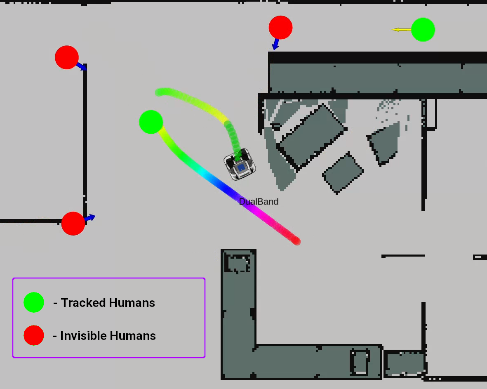

CoHAN2.0
Enhanced Human-Aware Navigation with Behavior Tree Mode Switching
CoHAN 2.0 is an enhanced version of the Cooperative Human-Aware Navigation framework, building on the foundations of the original CoHAN system [Singamaneni et al., IROS 2021]. This new iteration significantly improves the stability and robustness of the navigation pipeline in dynamic human environments. A key advancement in CoHAN 2.0 is the integration of behavior trees for context-aware mode switching, enabling more structured and scalable decision-making during navigation.
The system maintains tight integration with the ROS navigation stack and leverages the Human-Aware Timed Elastic Band (HATEB) planner for trajectory generation, while the newly introduced behavior-based layer allows the robot to seamlessly adapt between social contexts and allows easier integration of new behaviors.
In addition to behavior-based mode switching, CoHAN 2.0 incorporates reasoning about invisible humans in the environment, as introduced in [Singamaneni et al., IROS 2022]. By fusing observed human motion with static map information, the system infers the presence of humans who may be occluded or temporarily out of sensor range. This allows the planner to proactively account for hidden human activity—enhancing safety and social compliance in complex, cluttered spaces.
{kind=link}
Citation
Singamaneni, P.-T., Favier, A., & Alami, R. (2022). Watch out! There may be a Human. Addressing Invisible Humans in Social Navigation. In Proceedings of the 2022 IEEE/RSJ International Conference on Intelligent Robots and Systems (IROS), pp. 11344–11351. IEEE.
Singamaneni, P. T., Favier, A., & Alami, R. (2021). Human-Aware Navigation Planner for Diverse Human-Robot Interaction Contexts. In Proceedings of the IEEE/RSJ International Conference on Intelligent Robots and Systems (IROS).
Singamaneni, P. T., & Alami, R. (2020). HATEB-2: Reactive Planning and Decision Making in Human-Robot Co-navigation. In Proceedings of the International Conference on Robot & Human Interactive Communication (RO-MAN).
Bibtex
@inproceedings{singamaneni2022watch,
title={Watch out! There may be a Human. Addressing Invisible Humans in Social Navigation},
author={Singamaneni, Phani-Teja and Favier, Anthony and Alami, Rachid},
booktitle={2022 IEEE/RSJ International Conference on Intelligent Robots and Systems (IROS)},
pages={11344--11351},
year={2022},
organization={IEEE}
}
@inproceedings{singamaneni2021human,
author = {Singamaneni, Phani Teja and Favier, Anthony and Alami, Rachid},
title = {Human-Aware Navigation Planner for Diverse Human-Robot Ineraction Contexts},
booktitle = {IEEE/RSJ International Conference on Intelligent Robots and Systems (IROS)},
year = {2021},
}
@inproceedings{singamaneni2020hateb,
author = {Singamaneni, Phani Teja and Alami, Rachid},
title = {HATEB-2: Reactive Planning and Decision making in Human-Robot Co-navigation},
booktitle = {International Conference on Robot \& Human Interactive Communication},
year = {2020},
doi = {10.1109/RO-MAN47096.2020.9223463}
}